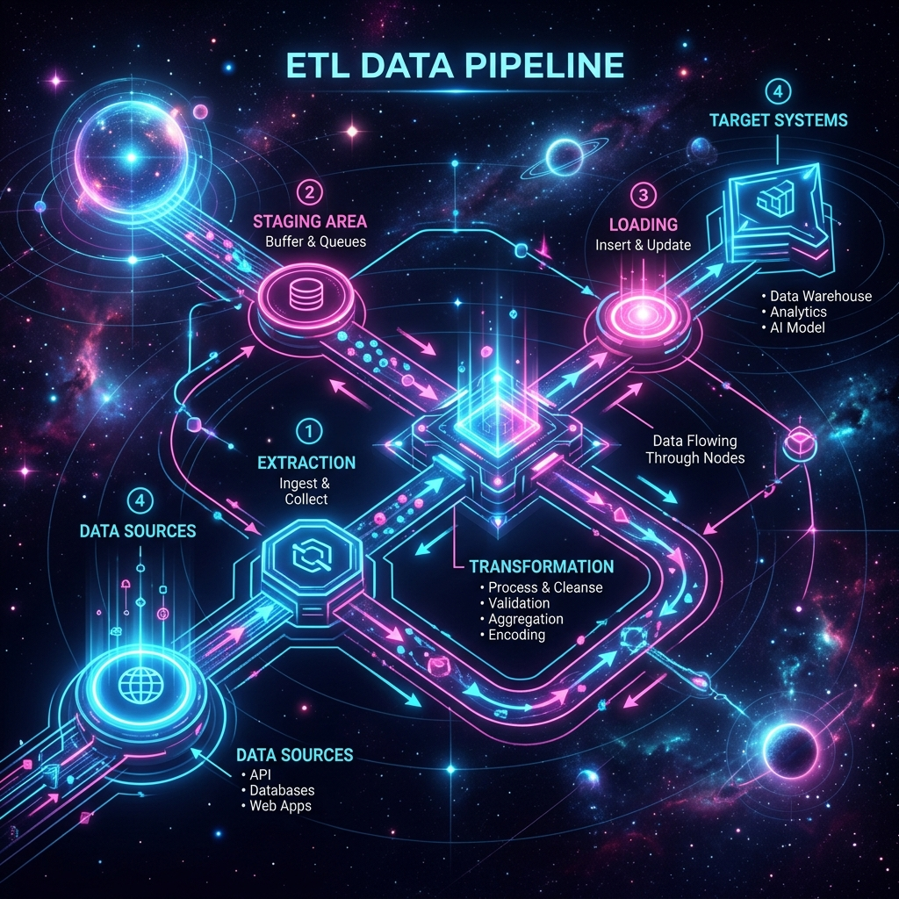

python data_pipeline.py --portfolio
Turning Data into
3
repos publicos orientados a portfolio
Python + SQL
base comun en analitica, ETL y automatizacion
BI + RPA
proyectos conectados a casos de negocio reales
Turning Data into
Insight, Automation and Delivery
Trabajo en la interseccion entre analitica, ingenieria de datos y automatizacion. Construyo pipelines, modelos de datos, dashboards ejecutivos y flujos RPA orientados a resultados medibles y operables.
Experiencia Laboral
Noviembre 2025 - Enero 2026
Programador y Analista de Datos
TITSA
Desarrolle aplicaciones con Django y Python, conectadas a APIs y bases de datos, y participe en tareas de analisis de datos, limpieza de informacion y generacion de resultados orientados a negocio.
Mayo 2025 - Junio 2025
Programador
ALFRAN
Trabaje en automatizacion y tratamiento de datos con Python y JavaScript, integrando procesos web y formularios en WordPress para reducir tareas manuales.
Formacion Academica
Graduado
Grado en Ingenieria Informatica
Especialidad en Desarrollo de Software
Formacion orientada al ciclo completo de desarrollo, arquitectura de sistemas, bases de datos y aplicaciones web, con base solida para proyectos de datos y automatizacion.
2021/22-2
Mineria de Datos
Asignatura optativa - Calificacion: Notable
Trabajo con tecnicas de descubrimiento de conocimiento, preparacion de datos, clasificacion, agrupamiento y evaluacion de modelos analiticos.
Core Knowledge
Analytics & BI
Transformacion de datos en reporting accionable mediante modelado, KPIs, analisis exploratorio y visualizacion ejecutiva.
SQL & Data Modeling
Diseno de esquemas, consultas analiticas y estructuras de datos listas para reporting, automatizacion y consumo operacional.
ETL & Orchestration
Construccion de flujos de extraccion, transformacion y carga con foco en trazabilidad, operabilidad y calidad de datos.
RPA & Document Automation
Automatizacion de procesos documentales y operativos con extraccion de datos, validaciones y persistencia segura en sistemas empresariales.
Featured Projects
01. Analytics / Forecasting
Executive Sales & Forecast Dashboard
Proyecto end-to-end de analitica comercial con dataset sintetico, modelo en estrella, KPIs ejecutivos y forecast de revenue a 90 dias. El flujo genera artefactos listos para Power BI a partir de Python, SQL y Scikit-Learn.
10,205 orders
90-day forecast
Power BI ready exports
Python
SQL
Power BI
Scikit-Learn
Ver Repositorio

02. Data Engineering
Cloud ETL & Data Warehouse Orchestration
Diseno de un flujo ETL orientado a APIs, almacenamiento en cloud y carga analitica en warehouse. El repositorio muestra la estructura de orquestacion con Airflow y el planteamiento tecnico para pipelines mantenibles y listos para reporting.
Airflow orchestration
Warehouse-first design
Cloud ingestion pattern
Apache Airflow
Snowflake
AWS S3
Python
Ver Repositorio
03. RPA / Document Processing
Intelligent Invoice Processing Bot
Simulacion de un bot de cuentas a pagar que procesa facturas desde texto OCR, extrae campos con regex, valida reglas de negocio y separa documentos limpios de excepciones antes de registrar el resultado en un backend tipo ERP.
OCR-style extraction
Exception handling
ERP posting flow
UiPath
OCR
SQL Server
Regex
Ver Repositorio
Let's Connect
Si quieres revisar codigo, proyectos de datos o automatizacion aplicada a negocio, puedes encontrarme en GitHub.
Open GitHub Profile